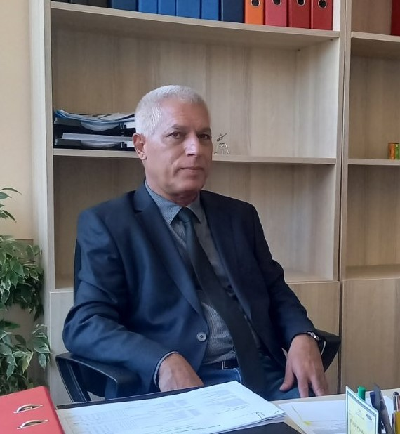
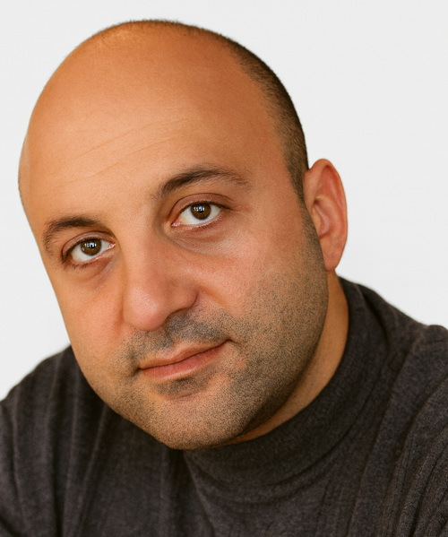

Добре дошли в Българския институт за международна политика
Ние сме независимо, нестопанско сдружение със седалище във Варна, България.
Нашата мисия е да насърчаваме размисъл върху политиката – в България, Европа, и отвъд.
Чрез коментари, анализи и публикации предоставяме платформа както на начинаещи анализатори, така и на утвърдени експерти да участват в смислен политически диалог.
Вярваме, че стойностните идеи заслужават пространство!
Единен идентификационен код: 208390337.
Изданието „Региони“ e основната публикация на БИМП. ISSN: 3033-2516.
Нашите експерти


Последни статии
Най-новите анализи и публикации от нашия екип
🗣️ Гласовете на БИМП
„Сътрудничеството с Русия и Китай предлага краткосрочни ползи, но създава дългосрочни рискове за демокрацията…“
📖 Източник (2025)
GESKIEDENIS EN POLITIEK VAN SUID-AFRIKA, ZIMBABWE, NAMIBIË, ANGOLA EN MOSAMBIEK: DIE PAD NA ONAFHANKLIKHEID EN DEMOKRASIE
Издателство: ЕНА, Варна
ISBN: 978-619-7255-24-9
Проектите на БИМП
Освен аналитичните статии, БИМП развива собствените си инициативи и проекти за регионален диалог.
🧠 Провери знанията си
Колко добре познавате политическата история и география на Балканите, ЦИЕ, Южна Африка и Кавказ? Направете теста на БИМП — въпроси с таймер за столици, лидери, типове режими и исторически повратни точки.
Забележка: Тестът е достъпен само на английски език. Всички въпроси са подбрани и проверени от експертите на БИМП за фактическа точност и аналитична релевантност.
▶ Направи теста📅 Политически факт на деня
Партньори на БИМП

Организации, с които БИМП си партнира и поддържа професионален диалог.